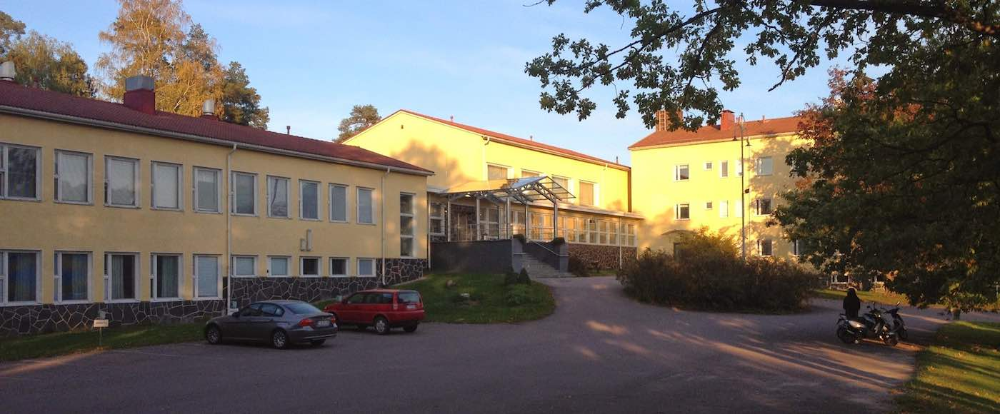

What
The biggest and best Lindy Hop dance camp in Finland, Swing Spring is here again!
When
May 13th - 17th 2015.
Where
The camp will take place at Kanneljärven Opisto, Lohja!
Program
Preliminary schedule:
Classes
Swing Spring is a Lindy Hop camp, meaning that Lindy Hop will be taught daily. In addition to Lindy, we will have elective classes and tasters on other dances or subjects, so that they promote the general idea of the camp.
Competitions
Two different lindy hop competitions will be arranged during Swing Spring 2015. Both of them are improvised social dance contests so no choreographies or special skills are required. Competition entry is included in the prices of the camp and party tickets, though a qualifying round may be arranged in the early evening before the party starts. The best way to register for the competitions is to do it while registering for the event.
Cabaret
On Saturday night there will be a cabaret. All kinds of performances are welcome to the cabaret, please, contact Tiiti (tiiti.valonen(at)comets.fi).
Teachers

Riikka Antikainen
Riikka has been a happy Lindy Hopper since 2006. Over the years, along came Authentic Jazz, Balboa, teaching and other sorts of swing-connected craziness both in Finland and abroad. Today, Riikka teaches Lindy Hop and Balboa through Rock'n'Swing Club Comets ry in Helsinki. She loves social dancing, DJing and teaching people to dance in rhythm, in control and together.

Heidi Pohjola
Heidi started her dancing career with ballroom and latin dances in 1995 and she competed in them for well over ten years. Round 2000, she also found Finnish social dancing and Rock’n’Swing dances, in which she also wanted to compete, leading to three Finnish Lindy Hop championships. Nowadays, Heidi is mostly retired from competing, but she continues teaching and social dancing.

Suvi Ravela
Suvi started dancing to balance out her studying. During her dancing career, she has danced Flamenco, Ballet and modern African dancing, before finally finding Lindy Hop, which she started teaching in Helsinki in 2012. Suvi loves Lindy Hop because of the music, the rhythm, the communication and creating the dance together with your partner.

Mikko Multanen
Mikko fell in love with Lindy Hop 2005 and a year later also with Balboa and Authentic Jazz. He has taught Lindy Hop, Balboa and Authentic Jazz since 2007. Mikko loves the freedom and happiness of Lindy Hop and enjoys teaching people about rhythm and connection.

Aleksis Nokso-Koivisto
Aleksis is one of the most well-known Lindy Hoppers in Finland. Since 1995, he’s danced most Rock’n’Swing dances and other dances as well, but his dancing and teaching is also inspired by music and other performing arts. His classes are above all physical, because the only way to learn to dance is to dance. However, this must be done with thought: deliberate practice is the only way to mastery.
Location

Swing Spring 2015 takes place at Kanneljärven Opisto, Lohja, about an hour away from Helsinki. We will stay in rooms of 2-3, some of which have bunk beds, or, if you wish for a cheaper option, in floor accommodation in classrooms. All rooms have fridges and the participants can also use a kitchen. However, we offer an affordable meal package including breakfast, lunch and dinner. When you’re not dancing, you can enjoy the beautiful Lake Hormajärvi and the lakeside sauna.
Contact
Organizing dance society is Rock'n'Roll Dance Club Comets ry.
Organisers
Director
Riikka Antikainen
Logistics
Paula Ranta
Parties
Tiiti Valonen
Marketing
Arja Sahlberg
Sanna Schildt
Budget, Classes and Website
Mikko Multanen
Graphics Design
Hannu Aarniala